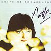

Celtic Lyrics Corner > Artists & Groups > Aoife Ferry > Aoife > Níl Sé 'Na Lá
|  | Níl Sé 'Na Lá |
| Credits : | Traditional; arranged by Aoife Ní Fhearraigh, Máire Brennan & Denis Woods |
| Appears On : | Aoife |
| Language : | Gaeilge (Irish Gaelic) |
| Other Versions : |
"
Nil Sé Ina La
" on Clannad's album Clannad
" Níl Sé Ina Lá " on Maighread & Tríona Ní Dhomhnaill's album Idir An Dá Sholas " 'Til The Sun Comes Up " on Katie McMahon's album After The Morning " Níl Na Lá " on Solas' album Solas |
| Lyrics : | English Translation : |
| Níl aon phort dá chuala mé ar phíob | I've never heard a pipe tune |
| Ó tháinig mé i méadaíocht linbh | Since my childhood |
| Nach raibh liom ar bharr mo bhéil | That I didn't learn and play |
| Isteach i sliabh 's ag gabháil 'n bhaile | Going home by the mountain road |
| Curfá : | Chorus (after each verse) : |
| Níl sé 'na lá nó 'na lá | It is not day, it is not day yet |
| Níl sé 'na lá nó 'na mhaidin | It is not yet day, nor has it dawned |
| Níl sé 'na lá 's ní bheidh go fóill | It is not day yet, and it's aways off |
| Na níl sé ach uair ó d'éirigh an ghealach | The moon only came out an hour ago |
| Seo na mugaí, seo na jugaí | Here are the glasses, here are the jugs |
| Seo an áit a bhfuil an leann | Here runs the beer |
| 'S muna bhfuil an t-airgead in do phócaí | And if you don't carry money in your pocket |
| Buail a' bóthar 's gabh 'n bhaile | You can go home now |
| Éirigh do shuí a fhear an tí | Man of the house, arise |
| Is ná bíodh gruaim in do mhalaí | And stop grumbling |
| Líon domsa cárta dí | Serve me a pint |
| 'S gheobhaidh tú'n díolaíocht faoi mhaidin | For which I'll pay you in the morning |
| Chuir mé féin mo lámh in mo phóca | I put my hand deep in my pocket |
| 'S tharraing mé anois mo chorrán garbh | And I took out my change purse |
| 'S é dúirt sí liom suigh síos ag bord | The landlady said to me |
| Is gheobhaidh tú'n cárta go dtí'n galún | Sit down and I'll bring you a gallon |
| Tá na caoirigh ag ithe'n fhéir | The sheep eat the grass |
| Is tá na huain ag ól an bhainne | And lambs drink milk |
| Tá mo bhean féin ar fud na tír' | My wife is on her feet again |
| Is mithid domh éirí is gabháil 'na bhaile | I'd better get up and go home |